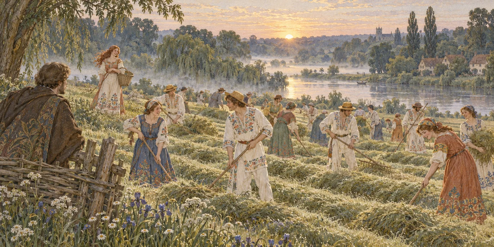
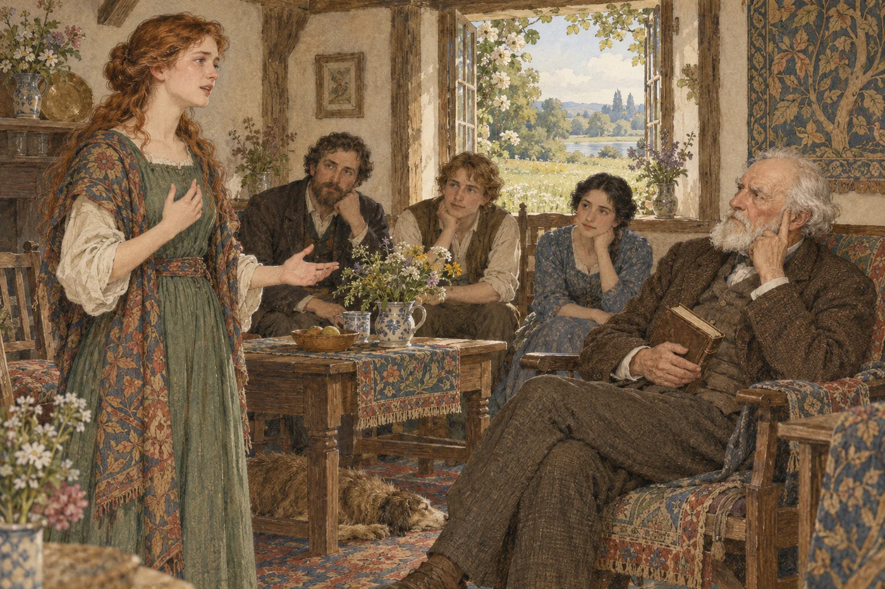

第23章 ラニーミードの早朝
翌朝、荒々しい物音に起こされたわけでもないのに、私はいつまでも寝床に横たわってはいられなかった。外の世界はすっかり目を覚まし、あのぼやき屋の老人が何と言おうと、幸福そのものに見えたからだ。起きてみると、まだ早い時刻なのに、すでに誰かが働いたあとらしく、小さな居間はきちんと片づき、朝食の用意も整っていた。
とはいえ、家の者はまだ誰も起きていなかった。私は戸外へ出て、花や草木のあふれる庭を二、三度歩き回ってから、牧草地を横切って川辺へ下りた。そこには私たちの舟があり、すでに見慣れた、親しいもののように感じられた。
少し上流へ歩きながら、川面から薄い霧が巻き上がり、やがて力を増した太陽にすっかり吸い取られてゆくのを眺めた。柳の枝の下では、そこから無数に落ちてくる小虫を追って、小魚が水面にまだらな波紋を散らしていた。あちらこちらで、大きなチャブが、夜更かしした蛾か何かに飛びついて水音を立てた。私はほとんど少年時代へ戻ったような気持ちになった。
やがて舟のところへ引き返し、しばらくそのあたりをぶらついてから、小さな家へ向かって牧草地をゆっくり上っていった。見ると、川から離れた斜面には、同じくらいの大きさの家がほかに四軒あった。私の歩いていた牧草地は、干草を作る草地ではなかったが、左右のすぐ近くには、薄板を組んだ柵が斜面を上っていた。左手の柵の向こうでは、私が少年だったころと変わらない簡素なやり方で、人々が朝早くからせっせと干草を作っていた。
新しく、よりよくなった時代の干草作りがどのようなものか見てみたかったし、エレンもそこにいるのではないかと思ったので、足は自然にそちらへ向かった。柵まで行って干草畑を見渡すと、刈った草を細長い畝から広げ、夜露を乾かしている人々の長い列の端に出た。
働いているのは若い女性が多く、昨夜のエレンとよく似た服装だった。ただし、たいていは絹ではなく軽い毛織物で、その多くに華やかな刺繍が施されていた。男たちはみな、鮮やかな色糸で刺繍した白いフランネルを着ていた。そのため牧草地は、まるで巨大なチューリップの花壇のように見えた。誰もが急がず、それでいて手際よく着実に働き、秋の林に群れるムクドリさながら、楽しげなおしゃべりで賑わっていた。
男女六人ほどが私のところへやってきて握手をし、朝の幸いを祈る挨拶をして、どこから来てどこへ行くのかを二、三尋ねた。そして旅の無事を祈ると、また仕事へ戻っていった。残念ながら、その中にエレンはいなかった。だがほどなく、斜面の上のほうの干草畑から、軽やかな人影が現れて私たちの家へ向かうのが見えた。籠を手にしたエレンだった。

夜露を乾かす共同作業で、牧草地は「巨大なチューリップの花壇」のように見える。
彼女が庭の門へ着くより先に、ディックとクララが家から出てきた。二人は少しのあいだ立ち止まってから、エレンを庭に残して、私を迎えに下りてきた。それから三人で、朝の取りとめのない話をしながら舟へ向かった。舟の中から家へ運んだのは夜露に傷みそうな物だけだったので、私たちはしばらくそこにとどまり、ディックが残りの荷物を整えた。
ふたたび家へ向かい、庭の近くまで来たとき、ディックが私の腕に手を置いて、私たちを止めた。
「ちょっと見てごらん」
見ると、低い生垣の向こうで、エレンが片手をかざして朝日を遮り、干草畑のほうを眺めていた。淡い風が黄褐色の髪を揺らしている。日に焼けた顔には、まだ太陽の温もりが宿っているようで、その中で両眼が明るい宝石のように輝いていた。
「見てごらん、お客人」とディックが言った。「ブルームズベリーで話したグリム童話の一場面そのものじゃないか。恋人同士の僕らが世界をさすらい、妖精の庭へたどり着いた。すると、そこには妖精本人がいる。さて、僕らに何をしてくれるのかな」
クララが、澄ました顔つきながら、堅苦しくはない口調で言った。
「その妖精は、よい妖精なの、ディック？」
「ああ、もちろん。それに、お定まりの筋書きどおりなら、昨夜のぼやき屋――あの小鬼だか森の精だか――がいなければ、もっといいことをしてくれるだろうね」
私たちは笑った。私は言った。
「私の役を物語から抜かしてしまったことには、気づいているんだろうね」
「そうか、それは確かだ」とディックは言った。「それなら、あなたは姿隠しの帽子をかぶっていることにしよう。自分の姿は見えないまま、何もかも見ているのさ」
その言葉は、この美しい新しい国で自分がどのような立場にあるのか確信できずにいる、私の弱いところを突いた。これ以上気まずくしないため、私は黙ったまま、皆と一緒に庭へ入り、家へ上っていった。
途中で私は、クララが都会育ちの婦人である自分と、私たちがあれほど賞賛した夏の田園との対照を、実はかなり意識していたのだろうと思った。その朝の彼女は、薄手で簡素な服装をエレンに似せ、足元も軽いサンダルだけだったからだ。
老人は居間で私たちを親切に迎え、こう言った。
「さて、お客人たち。この土地のあらを探そうと、あちこち見て回ってきたのだな。昨夜の幻想も、朝の光に照らされて、少しは消えたのではないか。それでもまだ、ここが気に入っているかね？」
「大いに」と、私はむきになって答えた。「テムズ下流でも、指折りに美しい場所です」
「ほう！」と老人は言った。「では、テムズを知っているのだね？」
ディックとクララがこちらを見ているのに気づき、私は顔を赤らめた。何と答えればよいのか、ほとんど見当がつかなかった。しかし、ハマースミスの友人たちと知り合ったばかりのころ、エッピング・フォレストを知っていると話してしまっている。厄介な事態を避けるには、真っ赤な嘘をつくよりも、大ざっぱに話をまとめるほうがましだろうと思った。
「以前、この国にいたことがあります。そのころ、テムズにも来ました」
「おお」と老人は身を乗り出した。「以前この国にいたのか。それなら本当のところを聞きたい。理屈は抜きにして、ひどく悪くなったとは思わないかね？」
「いいえ、少しも」と私は答えた。「ずっとよくなったと思います」
「なるほど」と彼は言った。「どうも、何かしらの理論に先入観を吹き込まれているようだね。もっとも、前にここにいたのは、当然われわれの時代にかなり近いころなのだろう。そうであれば、当時も今と同じ習慣のもとで暮らしていたわけだから、悪化もそれほど進んではいまい。私が考えていたのは、もっと昔のことだ」
「要するに」とクララが言った。「あなたは、ここで起きた変化について、ご自分の理論をお持ちなのね」
「理論だけでなく事実もある」と老人は答えた。「見てみなさい。この丘から見える小さな家は、ここを含めて、たった四軒だ。ところが昔は、葉がいちばん茂る夏でさえ、同じ場所から大きくて立派な家が六軒も見えたことを、私は確かに知っている。もっと上流では、ウィンザーまで庭と庭が切れ目なく続き、そのどの庭にも大きな屋敷があった。ああ、昔のイングランドは大した国だったのだ」
私は腹が立ってきて、言った。
「つまり、この土地のコックニー化を解消し、忌々しい従僕どもを追い払った、ということでしょう。ほんの一握りの忌々しい泥棒だけでなく、誰もが快適に幸福に暮らせるようになった。その泥棒どもは、どこにいようと俗悪さと腐敗の中心でした。この美しい川について言えば、連中はその美しさを道徳的に台なしにし、追い出されたときには、物理的にもほとんど破壊しかけていたのです」
この激しい言葉のあと、沈黙が訪れた。かつて同じ川で、コックニー趣味と、それを生み出す原因に苦しめられたことを思い出すと、私はどうしても抑えられなかったのだ。
やがて老人は、いたって冷静に言った。
「お客人。正直なところ、コックニーだの、従僕だの、泥棒だの、忌々しいだのといった言葉で、あなたが何を言おうとしているのか、私には分からない。それに、豊かな国で、ほんのわずかな人だけが幸福で快適に暮らせるということも理解できない。ただ、あなたが怒っていること、それも私に腹を立てているらしいことだけは分かる。だから、よければ話題を変えよう」
自説にあれほど固執する人にしては、親切で客を思いやる言葉だった。私は急いで、怒るつもりはなく、ただ強く言いたかっただけだと答えた。老人は重々しく頭を下げた。これで嵐は過ぎたと思ったところへ、不意にエレンが口を挟んだ。
「おじいさま。お客さまは礼儀正しいから、遠慮して口をつぐんでいるだけです。でも、お客さまが心の中でおじいさまに言いたがっていることは、きちんと言われるべきです。私にはそれがよく分かるので、代わりに言います。ご存じのとおり、私はそういうことを、いろいろな人から教わりました。その人たちは――」
「そうとも」と老人が言った。「ブルームズベリーの賢人や、そのほかの者たちからな」
「あれ」とディックが言った。「僕の年老いた親戚、ハモンドをご存じなのですか？」
「ええ」とエレンは答えた。「祖父が言うように、ほかの人たちからも教わりました。そして、教わったことをまとめれば、こうなります。」
「私たちが今、小さな家に暮らしているのは、畑で働くより立派なことをする余地がないからではありません。そうしたいから、そうしているのです。望みさえすれば、気の合う仲間たちと、大きな家で暮らすこともできます」
老人が不機嫌そうに言った。
「そのとおりだとも！ だが、あんな思い上がった連中と一緒に住むものか。誰も彼も、わしを見下している！」
エレンは老人に優しく微笑みかけたが、その言葉が聞こえなかったかのように続けた。
「おじいさまの言う大きな屋敷がたくさんあった昔なら、私たちは、好むと好まざるとにかかわらず、小さな家に住まなければなりませんでした。しかも、その家は、今のように必要なものが何でも揃っているどころか、がらんとして何もなかったでしょう。食べ物さえ足りず、着る物は見苦しく、汚れて、だらしないものだったはずです。」
「おじいさまは、もう何年もつらい仕事をしていません。本を読みながらあちこち歩き、何ひとつ心配せずに暮らしています。私はといえば、働きたいときには一生懸命働きます。仕事が好きだからですし、体にもよいと思うからです。働けば筋肉が引き締まり、もっと美しく、健康に、幸福になれます。」
「けれど昔なら、おじいさまは年を取ってからも、つらい仕事をしなければならなかったでしょう。そのうえ、ほかの老人たちと一緒に、牢獄のような場所へ閉じ込められるのではないかと、いつも怯えていたはずです。そこでは半ば飢え、楽しみもなかったでしょう。」
「そして私は、今二十歳です。昔なら、もう中年が始まりかけていたでしょう。あと数年もすれば、やせこけ、頬はくぼみ、疲れ果て、苦労と不幸に取り囲まれて、かつて美しい娘だったとは誰にも想像できなくなっていたでしょう」
過去に自分のような人々が味わった苦しみを思い、エレンの目には涙が浮かんでいた。
「お客さまが考えていたのは、こういうことですか？」
「そうだ」と、私は胸を動かされて答えた。「それだけではない。私の国では、君の言ったような悲惨な変化を、何度も目にしてきた。みずみずしく美しい田舎の娘が、裾を泥で汚した哀れな田舎女へ変わってしまうのを」
老人はしばらく黙っていたが、やがて気を取り直し、いつもの言い回しに慰めを見いだした。
「なるほど。では、お前はそういう今の暮らしが好きなのだな？」
「ええ」とエレンは言った。「私は死よりも、生きることのほうを愛しています」

親愛を失わないまま対立する、エレンの生の肯定と祖父の過去への執着。
「ほう、そうかね」と老人は言った。「だが、わしは面白味のたっぷりある、よい昔の本を読むのが好きだ。たとえばサッカレーの『虚栄の市』のような本をな。今では、どうしてああいう本を書かないのだ？ その問いを、ブルームズベリーの賢人にぶつけてみるがいい」
この当てこすりにディックの頬が少し赤くなり、そのあと沈黙が続いた。私は何か言ったほうがよいと思った。
「皆さん、私はただの客ですが、あなたたちがこの川のいちばん美しいところを見せようとしてくれているのは分かっています。今日は間違いなく暑くなるでしょうし、そろそろ出発したほうがよくはありませんか？」
読書注一覧
各注は、本文中の語が画面へ入ると右側（狭い画面では下側）にも表示されます。
読書注 22
ラニーミード
ウィンザーとステインズの間、テムズ河畔の水辺の牧草地。1215年にジョン王と諸侯がマグナ・カルタを取り決めた場所として知られる。自由と共同体の歴史を帯びた土地を、モリスは未来社会の日常的な労働と対話の舞台にしている。
National Trust読書注 23
「グリム童話」の比喩
特定の一話を厳密に指すというより、旅人、恋人、妖精の庭という類型を即興で重ねた比喩。ディックは現実の田園をおとぎ話として楽しむ一方、ウィリアムは「姿の見えない観察者」という自分の不安定な位置を意識する。
本文へ戻る
読書注 24
コックニー／コックニー化
現在の Cockney はロンドン東部の労働者文化・方言を示す重要な自己認識でもある。しかし19世紀には、田舎を知らない都会人、洗練を欠くロンドン庶民を見下す階級的な含みも強かった。ここでの cockneyfied は方言の話ではなく、富裕な都市住民の邸宅と趣味によって川辺が郊外化・俗悪化した、というウィリアムの侮蔑を表す。
London Museum読書注 25
救貧院（workhouse）
1834年の新救貧法のもとで、救済を求める貧民を収容した施設。救済への依存を抑止するため、生活条件は意図的に厳しくされることがあり、老後に救貧院へ送られる恐怖はヴィクトリア朝の貧困を象徴した。エレンがいう「牢獄」は比喩だが、同時代にも workhouse は監獄になぞらえられた。
UK Parliament読書注 26
サッカレー『虚栄の市』
William Makepeace Thackeray の小説 Vanity Fair（1847–48）。野心、階級上昇、金銭、偽善に動かされる社会を風刺する。祖父の反論は単なる読書趣味ではない。旧社会の不正や葛藤が面白い物語を生んだのなら、それを失った社会では同種の小説も書けないのではないか、とユートピアの文化的な代償を突いている。
本文へ戻る